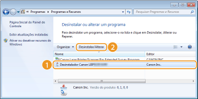
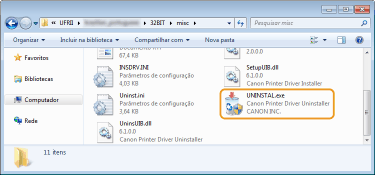
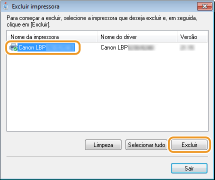
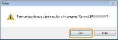
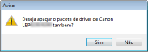
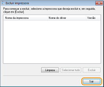
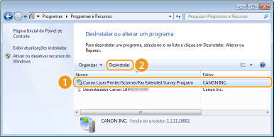
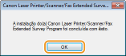

O desinstalador será iniciado.
O desinstalador será iniciado. 
0KUF-00C
Se não precisar mais dos drivers de impressora instalados ou do Programa de Pesquisa Estendida de Produto, você pode desinstalar (apagar) e retirá-los do computador.
1
Faça o login no computador com uma conta de administrador.
2
Acesse [Programas e recursos] ou [Adicionar ou remover programas]. Acesse [Programas e recursos] ou [Adicionar ou remover programas].
3
Selecione o driver de impressora a ser desinstalado e clique em [Desinstalar/Alterar] ou [Modificar/Remover].

|
O desinstalador será iniciado. |

Se não encontrar o driver de impressora a ser desinstalado.
Inicie o desinstalador a partir do CD-ROM ou DVD de Software do Usuário ou do arquivo que baixou.
|
1
|
Coloque o CD-ROM ou DVD no drive do computador.
Para iniciar o desinstalador a partir do arquivo do driver de impressão baixado da rede, o procedimento é o seguinte.
|
|
2
|
Abra a pasta que contém o desinstalador.
Para sistemas operacionais de 32 bits
Selecione a pasta no [UFRII] Para sistemas operacionais de 64 bits
Selecione a pasta no [UFRII] Se não souber se o Windows Vista, 7, 8, Server 2008 ou Server 2012 utilizado é de 32 ou 64 bits, consulte Verificando a arquitetura de bits. |
|
3
|
Clique duas vezes em "UNINSTAL.exe".
 |
4
Selecione a impressora a ser desinstalada e clique em [Excluir].


Se clicar em [Limpeza], todos os arquivos, informações em diretórios e outros dados relacionados a todas as impressoras serão apagados, tanto da impressora selecionada como de todas as outras impressoras na lista. Para desinstalar drivers de impressora, utilize a opção [Excluir]. Se não houver nenhuma impressora na lista, clique em [Limpeza] .
5
Clique em [Sim].

|
|
A desinstalação será iniciada.
Quando a tela a seguir aparecer, clique em [Sim] ou [Sim para todos].
 |
6
Clique em [Sair].

1
Faça o login no computador com uma conta de administrador.
2
Acesse [Programas e recursos] ou [Adicionar ou remover programas]. Acesse [Programas e recursos] ou [Adicionar ou remover programas].
3
Selecione [Canon Laser Printer/Scanner/Fax Extended Survey Program] e clique em [Desinstalar] ou [Remover].

4
Clique em [OK].
